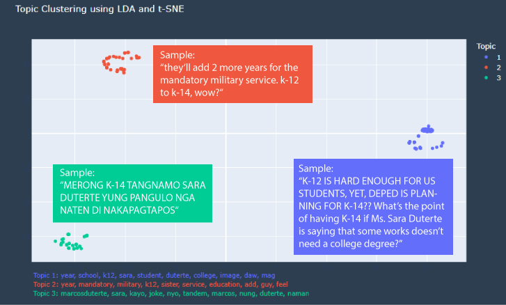

Topic Clustering
We wanted to take a closer look at the content of each tweet, so we decided to use K-Means clustering to find topic clusters in the tweets. Prior to performing clustering, we used NLP to help simplify the tweet texts in order for the model to work.
We limit the model to only producing three clusters. This was because, after some trial runs, we determined that limiting the model to only three clusters produced more unique and easily identifiable topics.
Figure 1: Topic clustering
We have identified some sample tweets from each of the three topic clusters and included them in the figure above. We identified the three topics to be as follows:
- Effects of the K-12 changes on schooling
- Mandatory military service
- Criticisms and/or sarcasms about the Marcos-Duterte administration